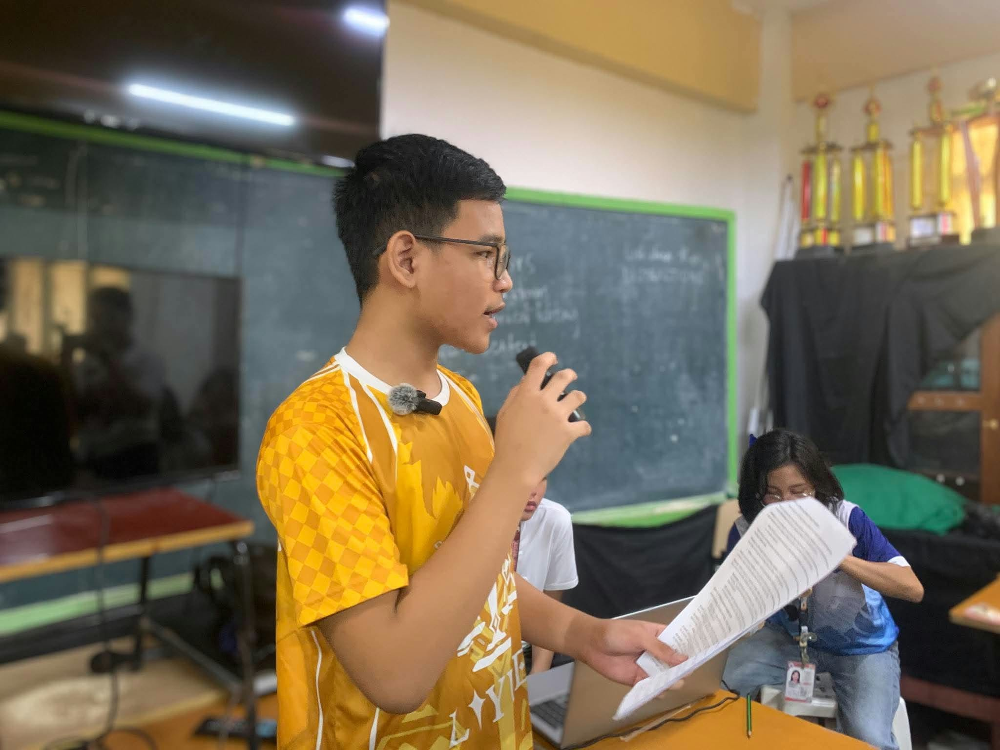

AI in Education: A Tool, Not a Replacement for Learning

A keynote speaker and journalism coach, Xydrone Cawaling, calls for responsible AI use as concerns grow over copied assignments, student originality, and the importance of independent work.
Artificial intelligence (AI) is raising concerns about academic honesty as more students use the technology to complete school assignments. A keynote speaker emphasized that AI should support learning rather than replace students' own efforts.
The speaker warned that excessive reliance on AI may weaken students' critical thinking, creativity, and independent learning skills.
AI tools can help learners understand difficult lessons, organize ideas, and improve their writing. However, submitting AI-generated work without understanding or acknowledging its use can raise concerns about academic integrity.
The growing use of AI may also affect students' ability to express their own thoughts and develop their unique writing styles.
To address these challenges, the speaker encouraged schools to establish clear rules on the proper use of AI in academic activities.
Teachers can promote honesty by requiring students to explain their answers, share original ideas, and complete tasks that demonstrate their understanding of lessons.
The speaker also emphasized that students should continue using textbooks, reading materials, and independent research to strengthen their knowledge and literacy skills.
Ultimately, AI should remain a learning tool, not a substitute for students' own thinking. Responsible use of technology can help protect academic integrity while allowing students to develop essential skills for the future.